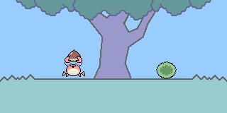

公開: くりひろいゲーム0.3.0
2018年05月06日

くりひろいゲームのVersion 0.3.0を公開しました。
クリを拾っても得点が増えるだけで、物足りないような気がしたので、カニがジャンプするようにしました。 少し漫画らしい演出になったと思います。
せっかくなのでキーボード操作にも対応しました。 ゲーム画面をクリックするとキーボード操作がオンとなり、他をクリックするとオフになるようにしました。
機能を追加する前に、無駄なコードを削除したり、空白を減らしました。 それによって、前のバージョンとあまりプログラムサイズが変わっていません。
問題点
- ルール説明をゲーム画面内に表示するべきかもしれません。
- (技術的)モジュール間のデータの受渡しに無駄があります。 例えばcanvasのContext2Dや、カーソル状態、キーボード状態を引数でバケツリレーのように渡しています。
- (技術的)キャラクターの状態・ふるまい・見た目が結合しています。
次にゲームを作る時は上に挙げたような問題の解決策を考えます。